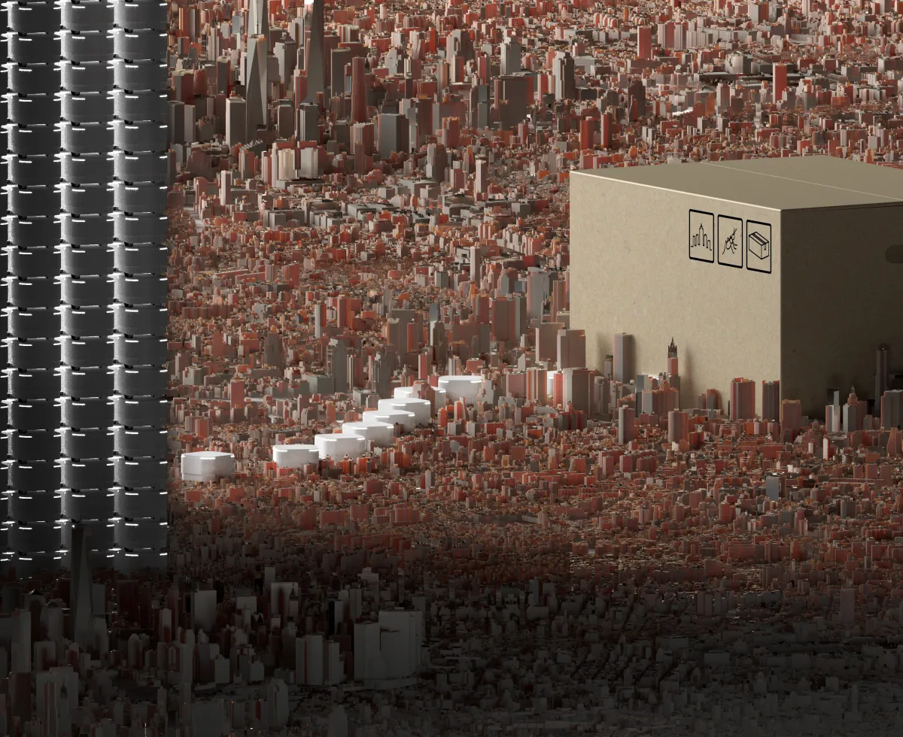
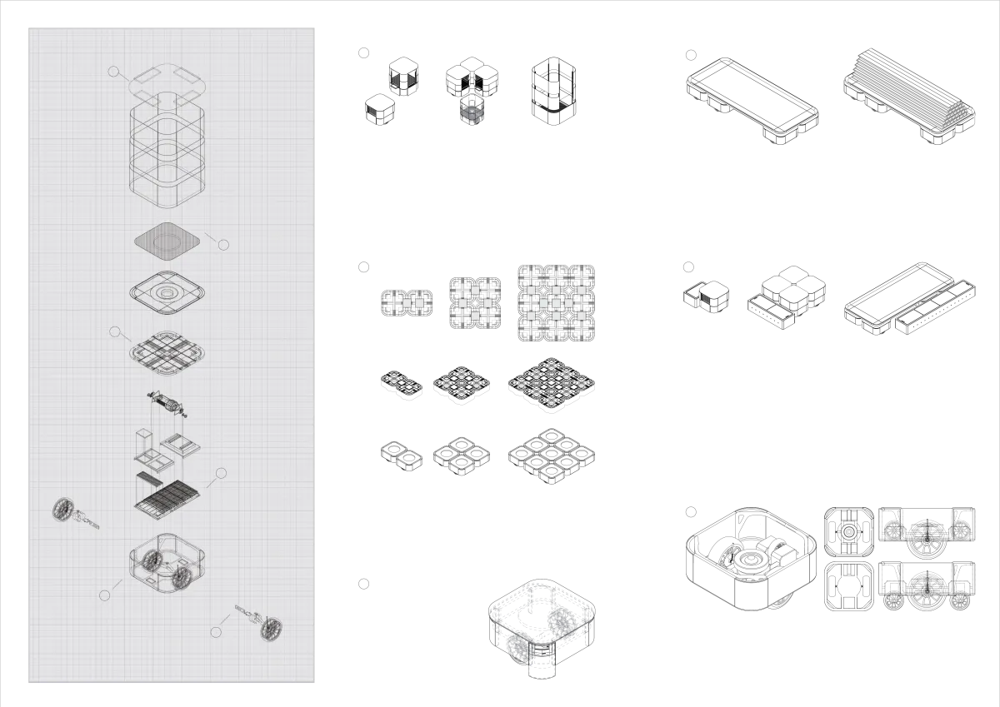
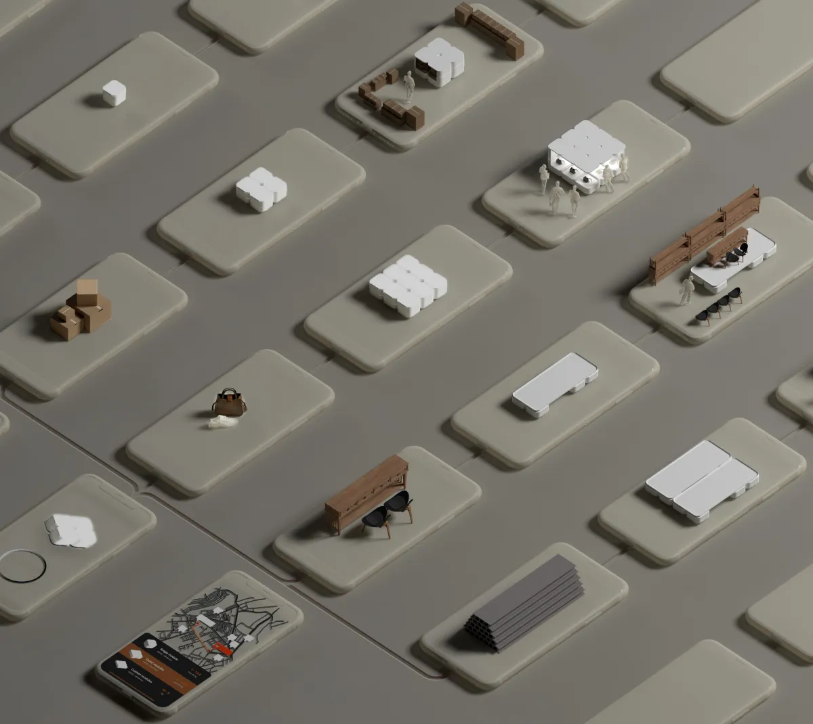
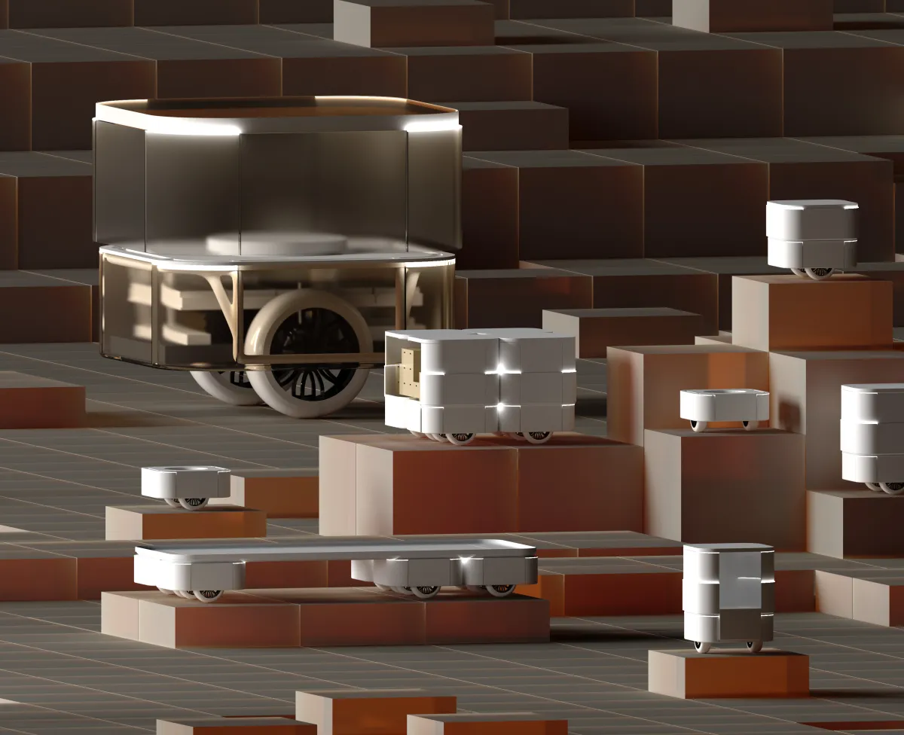
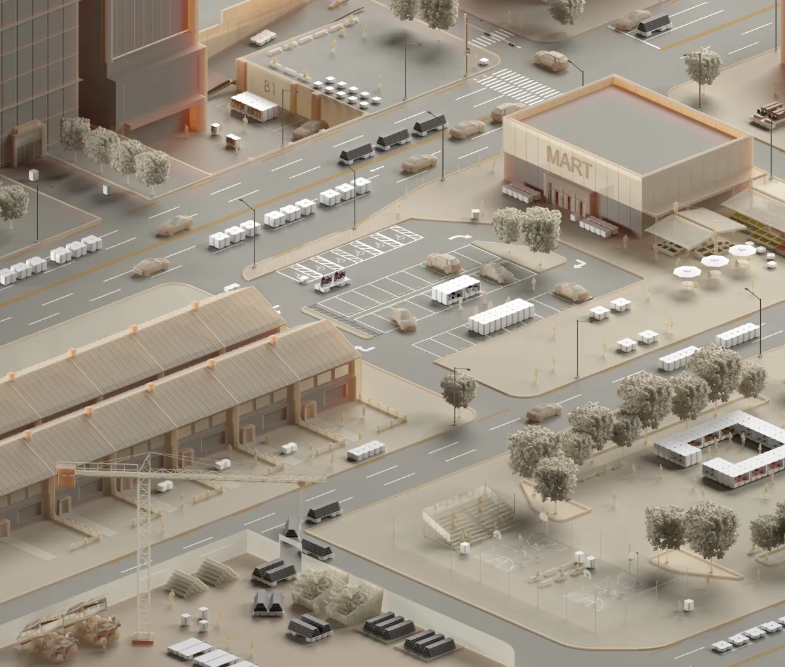
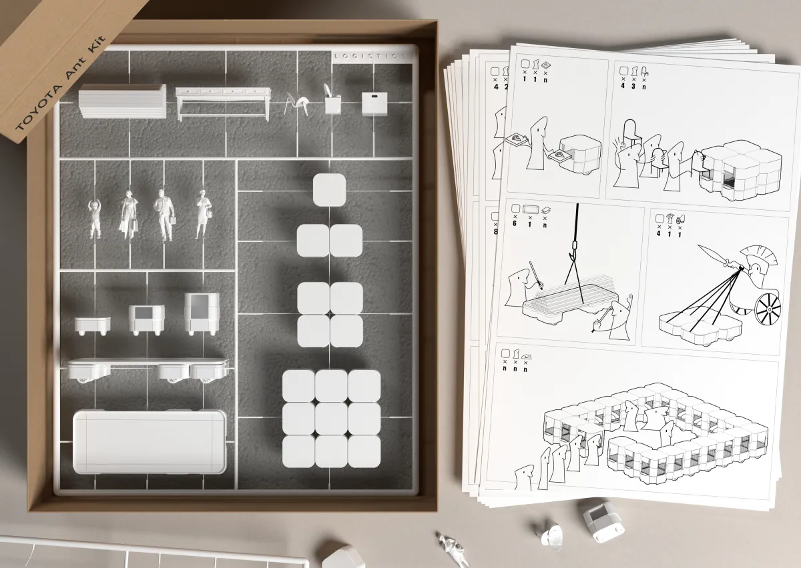

ANT
모듈형 물류 모빌리티
Next Generation of Logistics, Software / Hardware
작은 유닛이 모이고 흩어지며 물류량에 맞춰 크기를 바꾸는 모듈형 물류 모빌리티다.

개인화되는 물류 수요에 작은 유닛 단위로 대응한다. 유닛을 합치면 큰 짐도 나른다.
운송이 끝나면 도시의 빈 곳을 찾아가 팝업 스토어나 물품 보관함이 된다. 소프트웨어가 여러 유닛을 하나의 클러스터로 운영한다.
Technical Detail

ANT's Software

ANT's Hardware

ANT in the City

Ant Kit
